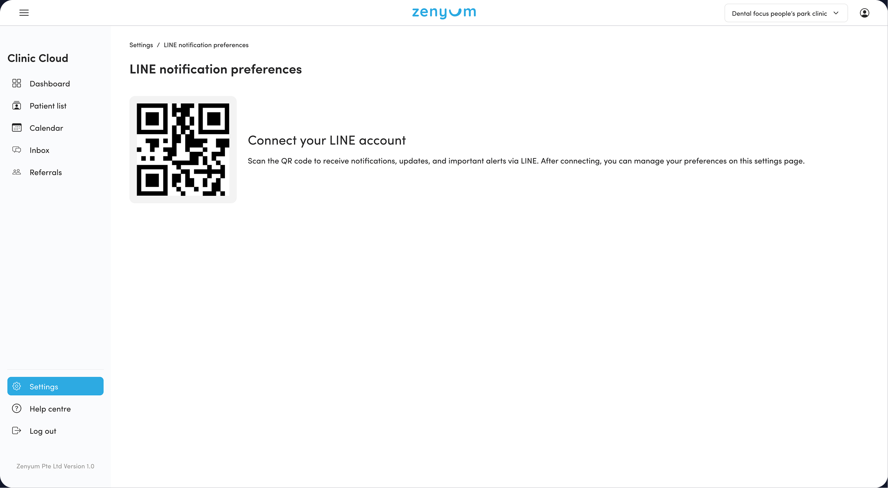
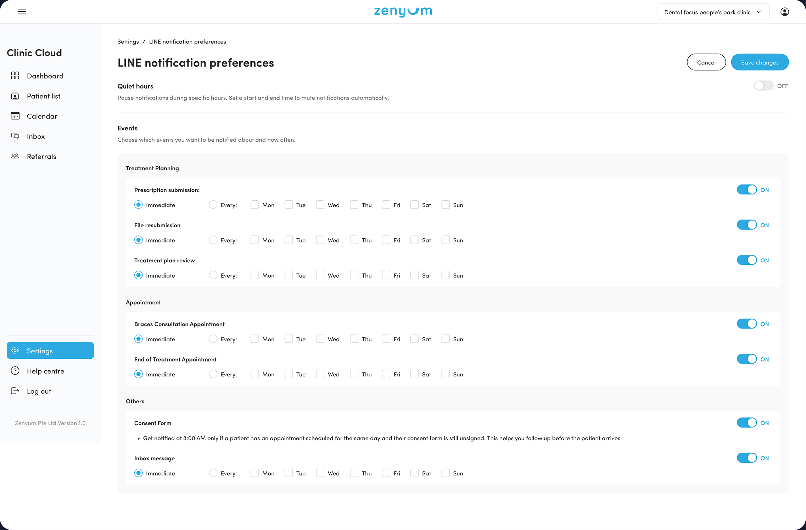
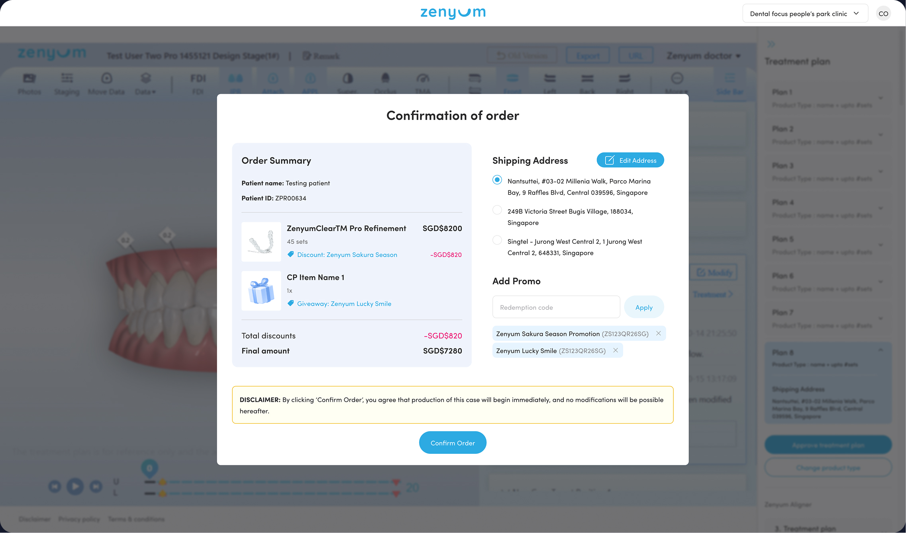
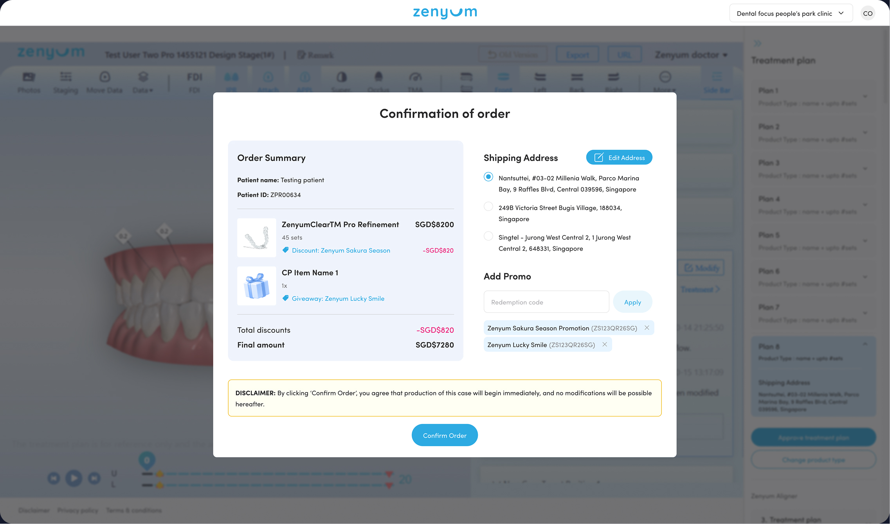

LINE notification
Enabled partner doctors to receive operational notifications via LINE.


LINE notification
Enabled partner doctors to receive operational notifications via LINE.
Case library
Enhanced the centralised library of successful cases to support doctors during patient case review.
WMS / CP Bundle
Designed the interface for managing Consumer Product Bundles to be offered during patient checkout.
Promotion log
Created tools for marketing teams to create, manage, and track promotions.
Promotion redemption
Updated patient prescription flows, allowing doctors to apply promotion codes.
 

Prescription instructions
Improved flow for doctors to update their treatment prescription instructions, including re-uploading files and responding to medical lab inquiries.